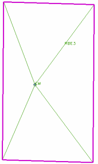
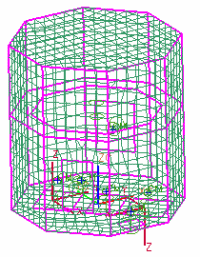

Add the constraint elements (1)
For each equipment box, create RBE3 constraint elements that connect the concentrated mass element to each of the four corners of the equipment box footprint.
These steps use one of the wall-mounted equipment boxes as an example. Repeat these steps for each equipment box footprint.
When you finish these steps for one of the equipment box footprints, the footprint looks like this:
|

|
RBE3 elements connecting the concentrated mass element (CM)
 Simulation Navigator
Simulation Navigator
-
To make the display easier to work with, show the main body of the satellite and hide all other polygon geometry. Make sure the 2D mesh for the satellite walls and top/bottom are displayed.
